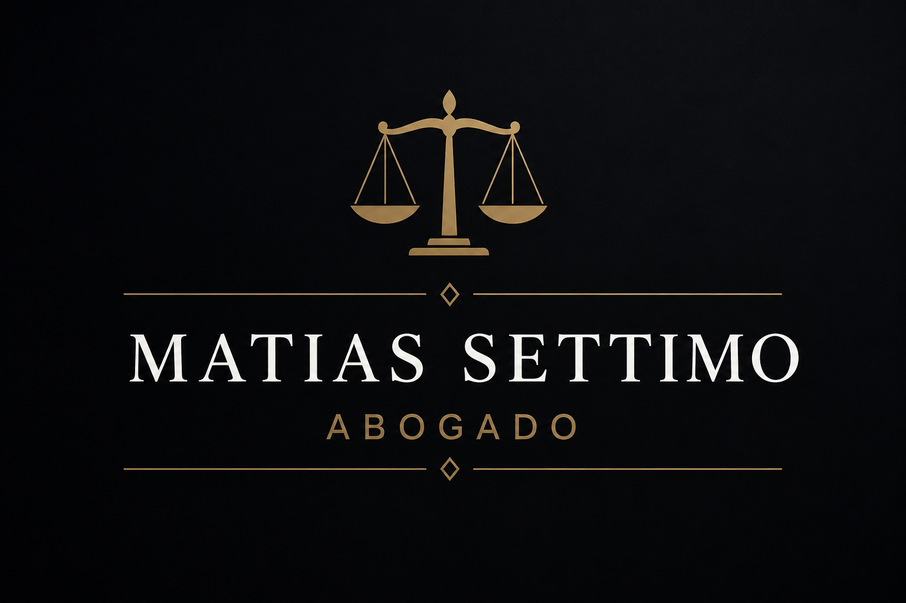

Derecho civil
Contratos, reclamos, daños y perjuicios, responsabilidad civil y asesoramiento preventivo.
Acompañamiento jurídico personalizado para personas y empresas, con atención directa, análisis serio y seguimiento en cada etapa.

Un abordaje profesional, claro y estratégico para resolver consultas, prevenir conflictos y acompañar cada caso con seguimiento personalizado.
Contratos, reclamos, daños y perjuicios, responsabilidad civil y asesoramiento preventivo.
Asistencia en conflictos laborales, acuerdos, indemnizaciones y consultas de trabajadores o empleadores.
Asesoramiento para empresas, comercios, documentación, acuerdos y prevención de conflictos.
El trabajo se orienta a brindar respuestas claras, analizar cada situación con seriedad y diseñar una estrategia adecuada para cada caso.
La atención combina cercanía, confidencialidad y seguimiento, priorizando una comunicación simple y ordenada durante todo el proceso.
Se analiza la situación planteada y la documentación disponible.
Se identifican riesgos, alternativas y posibles caminos de acción.
Se define el abordaje más conveniente para el caso concreto.
Se acompaña cada etapa con comunicación clara y ordenada.
Coordiná una consulta para analizar tu situación con claridad.
Solicitar consultaEscribinos para coordinar una consulta o enviar una breve descripción de la situación.